Use Ohm’s law to find the current through the resistor,  in the circuit.
in the circuit.
Substitute the expression for  in the equation.
in the equation.
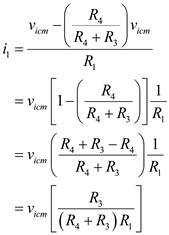
Refer to Figure 2.16 in the textbook for a differential amplifier.
Connect the two input terminals together to a common-mode signal source.
The current through the inverting and non-inverting terminals of an ideal op-amp are zero.
Draw the modified circuit and represent the currents and voltages.
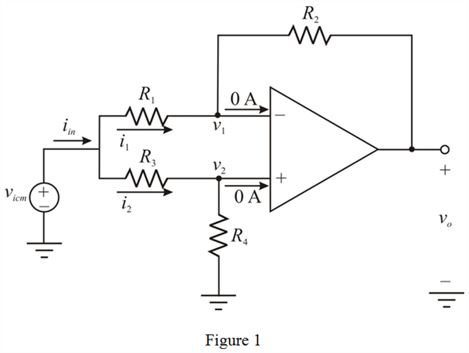
The common-mode input resistance of the circuit is,
Apply Kirchhoff’s current law at non-inverting node of the circuit.
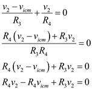
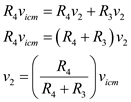
The voltage at inverting node due to virtual ground concept is,
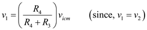
Use Ohm’s law to find the current through the resistor, in the circuit.
Substitute the expression for in the equation.
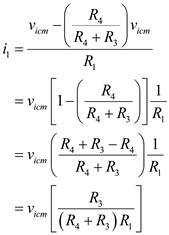
Use Ohm’s law to find the current through the resistor,  in the circuit.
in the circuit.

Substitute the expression for  in the equation.
in the equation.
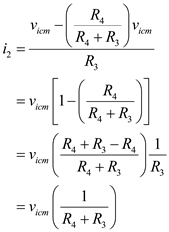
Substitute the expressions of 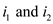 in the equation.
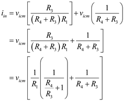
Consider that 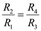. Therefore,
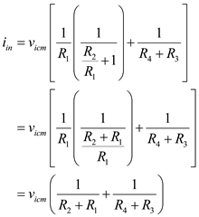
Simplify the function to find the input common-mode resistance, .
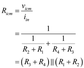
Hence, it is shown that the input common-mode resistance is, .